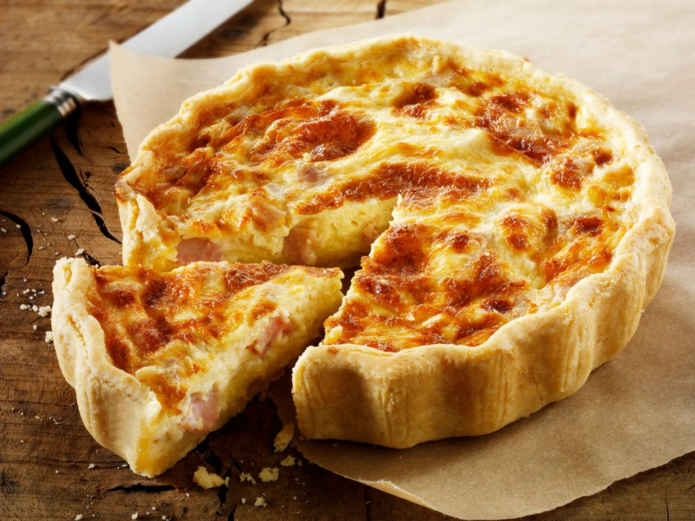

quiche lorraine de la Lorraine

La recette vient de Lorraine.
Il s'agit d'une recette gourmande et gratinée.
- pâte brisée
- crème
- oeufs
- lardons
STEPS
- Mélangez les oeufs et la crème.
- Ajoutez-y les lardons préalablement sautés à la poêle.
- Étalez la pâte brisée sur un moule à tarte et ajoutez-y l'appareil.
- Enfournez à 180° pour 30 minutes.